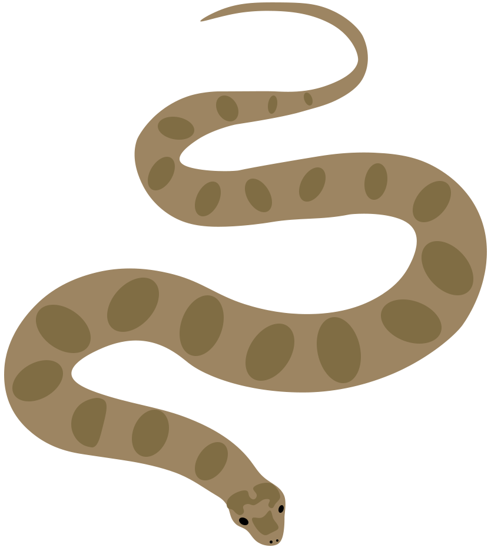
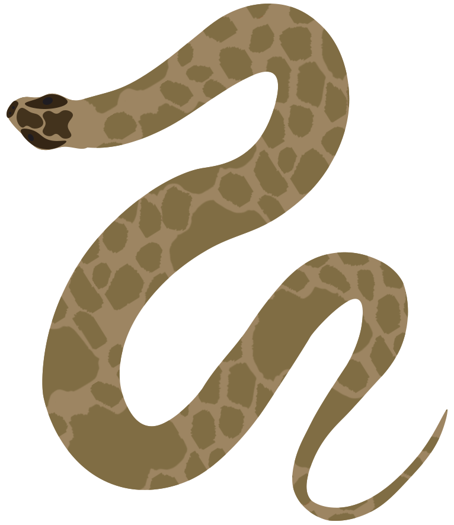

Водяний вуж Natrix tessellata
Неотруйна
Охороняється законом
Довжина: 70-100 см
Активність: Денна
Ареал: Біля водойм
Харчування: Риба, амфібії
Опис
Водяний вуж — неотруйна змія, що спеціалізується на водному способі життя. Має оливково-сіре забарвлення з характерним шаховим візерунком на спині. Відмінно плаває та пірнає, може перебувати під водою до 30 хвилин.


Особливості
- Чудовий плавець, більшість часу проводить у воді
- Полює на рибу та пуголовків
- Має клапани в ніздрях для пірнання
- Активний переважно вдень
Місця проживання
- Береги річок та озер
- Ставки та водосховища
- Прибережні зарості
- Кам'янисті береги з укриттями
Як відрізнити від звичайного вужа:
- Відсутні жовті "вушка" за головою
- Шаховий візерунок на спині
- Більш плоска голова
- Тонше тіло
Спосіб життя
Водяний вуж веде денний спосіб життя, найактивніший у теплу сонячну погоду. Чудово плаває, використовуючи все тіло для руху у воді. Полює переважно на рибу, яку ловить під водою.
Розмноження
- Парування відбувається навесні
- Самка відкладає 5-25 яєць
- Молоді особини з'являються в серпні-вересні
- Статева зрілість настає на 3-4 рік
Важлива інформація
При зустрічі з водяним вужем:
- Не турбуйте змію - вона абсолютно безпечна
- Не намагайтеся спіймати - може вкусити при самозахисті
- Не знищуйте місця проживання
- Повідомляйте про спостереження науковцям